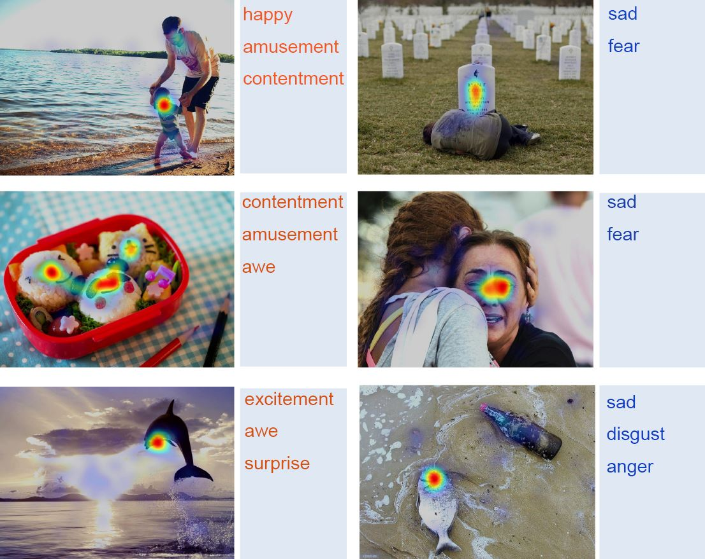

Image sentiment influences visual perception. Emotion-eliciting stimuli such as happy faces and poisonous snakes are generally prioritized in human attention. However, little research has evaluated the interrelationships of image sentiment and visual saliency. In this paper, we present the first study to focus on the relation between emotional properties of an image and visual attention. We first create the EMOtional attention dataset (EMOd). It is a diverse set of emotion-eliciting images, and each image has (1) eye-tracking data collected from 16 subjects, (2) intensive image context labels including object contours, object sentiments, object semantic category, and high-level perceptual attributes such as image aesthetics and elicited emotions. We perform extensive analyses on EMOd to identify how image sentiment relates to human attention. We discover an emotion prioritization effect: for our images, emotion-eliciting content attracts human attention strongly, but such advantage diminishes dramatically after initial fixation. Aiming to model the human emotion prioritization computationally, we design a deep neural network for saliency prediction, which includes a novel subnetwork that learns the spatial and semantic context of the image scene. The proposed network outperforms the state-of-the-art on three benchmark datasets, by effectively capturing the relative importance of human attention within an image.
